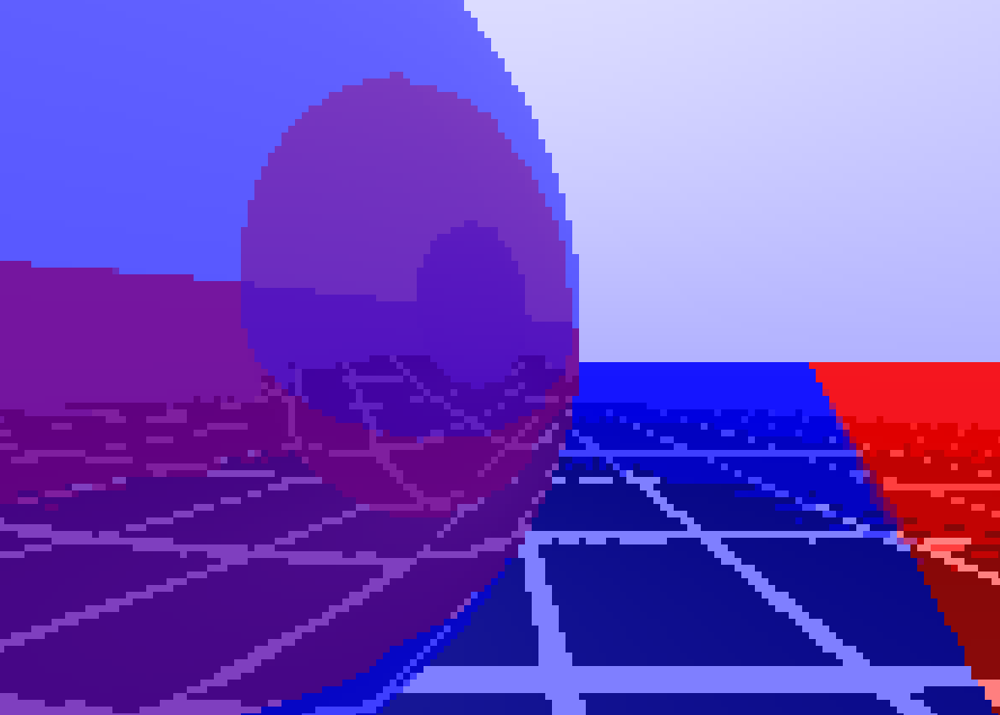
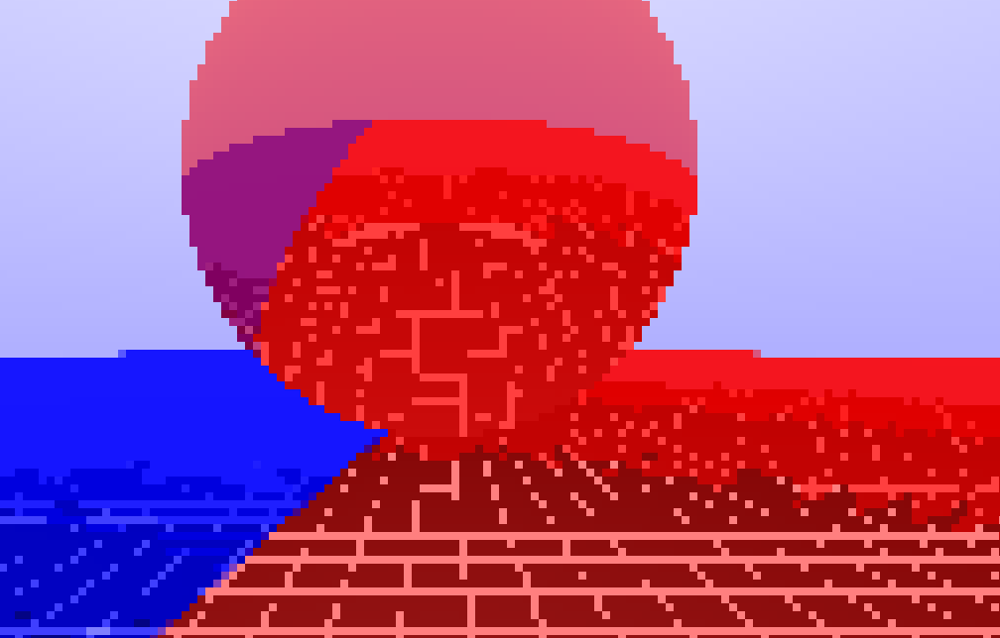
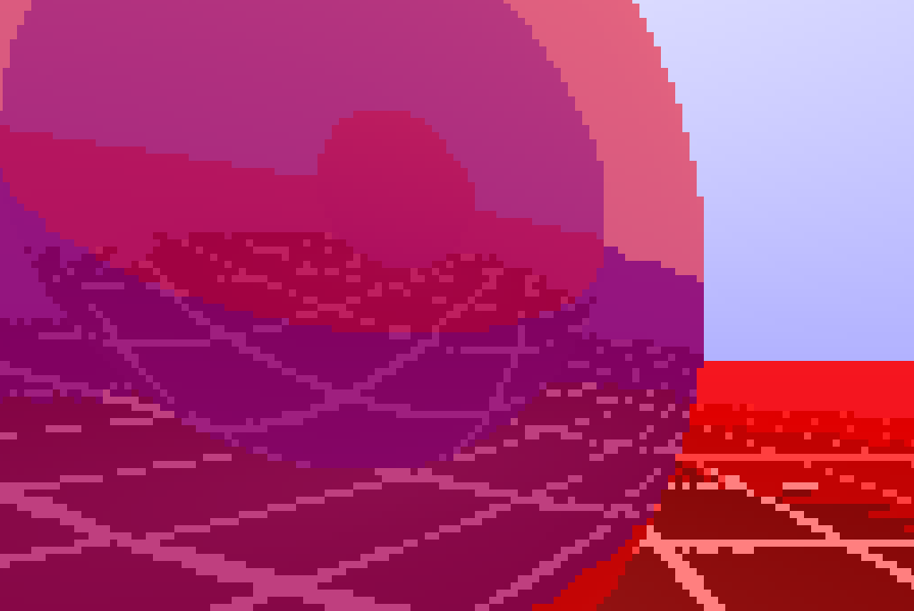

Summary
Context
A "ray tracer" is a program that draws a 3-dimensional scene by simulating rays of light.
....................
This was an individual personal project that I started around the beginning of my freshman year.
Process
The process of this project was casual. I jumped into it with little planning and did what I thought was best in each moment. I would deem this approach as adequate because this was just a casual personal project.
Task
The task was to implement a functional ray tracer in C. Preferably with the ability to move around the scene and to render in real-time.
Results/Deliverable
The final deliverable was a program that you could run to open a window with a ray-traced scene. A user can control the camera's position and the position of the red sphere.
Time/Schedule
There were no hard deadlines I set for myself. The project took about a week of on-and-off work.
Constraints/Challenges
The main constraint was using the C language (a language well-known for being difficult and minimalist). This self-given constraint was imposed so that I could improve my knowledge of the C language.
....................
I also tried not to rely on many external resources. I had previously written ray tracers while following a guide, but this time I did everything from scratch.
|
Insights
Things Done Well
I got a fully functional interactive ray tracer that runs in real-time. I would say the fact that it runs in real-time is what I did best, because ray tracers are known to be computationally heavy.
....................
I also did well considering that I wrote this project in C. I was drawn-in by the charm of writing sufficiently complex programs in such a bare-bones language, similar to my brainf**k project.
Skills Gained/Improved
- I increased my knowledge of programming in the C language.
- Writing this complex C program improved my understanding of how a computer works at a level closer to hardware.
- Got a deeper understanding of how ray tracers work. This is especially the case, because I didn't rely too much on external resources.
- I also improved my knowledge of linear algebra (a field of math used for computer graphics)
Improvement Opportunities
In the end, I reached my goal of creating a functioning real-time ray tracer with interactivity. However, there are opportunities for improvement that I've applied to future projects.
....................
There is a visual glitch where the ground is either red or blue. This was unintentional. I believe that slightly better planning and more careful debugging would have solved this.
|
Gallery
Reflections in reflections

Red sphere in the air

Reflections in reflections (again)

|
Technical Details
I specifically avoided using the GPU for this ray tracer, something that would be completely unreasonable for any serious project. The reason behind this was to satisfy a curiosity: how performant could I make a ray tracer that only runs on the CPU? The answer: quite performant (at a low resolution).
I used GLFW to create and draw on the window, and I implemented everything else from scratch in C.
A version of this project can be found on github.
Scroll to Top
|